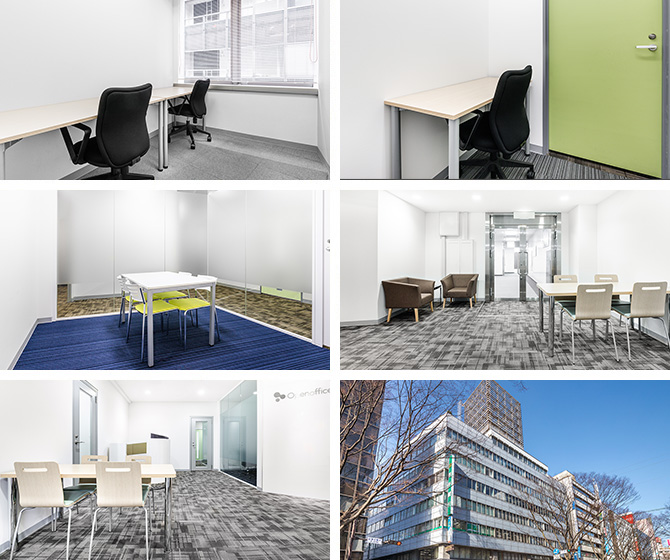

【個室レンタルオフィス】
オープンオフィス仙台青葉通り
仙台での起業や事業拡大だけではなく、仙台本社・支社設立にも最適な環境です。
大企業オフィス、繁華街にも近い利便性が高い立地。簡単に、リーズナブルな価格で、好きなときに使えるレンタルオフィス。
お気軽にお問い合わせください。
オープンオフィス仙台青葉通りが提供するオフィスサービス
-
 高速インターネット＜光ファイバー＞
高速インターネット＜光ファイバー＞
- 100Mbpsの光ファイバーによるブロードバンド環境をご用意しました。各部屋に配線済みですので、パソコンに繋げばすぐLAN経由で高速インターネットを利用出来ます。
-
 ネットワーク・カラーレーザープリンタ+スキャナー
ネットワーク・カラーレーザープリンタ+スキャナー
- ネットワークを利用して、各お部屋のパソコンから印刷できます。プリンタをご用意いただく必要もございません。
スキャナー機能も搭載しております。
-
 カラーレーザーコピー
カラーレーザーコピー
- フロア内にご用意してあります。
-
 シュレッダー
シュレッダー
- 機密情報の破棄にご利用いただけます。
-
 ICカードキーによる入室管理
ICカードキーによる入室管理
- 専用ICカードを使ったホテル式のスマートシステムを用いて、セキュリティーを向上させています。
-
 宅配ロッカー
宅配ロッカー
- 24時間、荷物の受け取りが可能な宅配ロッカーを採用しています。
-
 ミーティングルーム（会議室）
ミーティングルーム（会議室）
- 商談・会議にご利用いただける共有スペースをご用意しています。インターネットで簡単に予約をしていただけます。
-
 無線LAN（WiFi）
無線LAN（WiFi）
- 共有スペースとミーティングスペースにて、無線LAN(WiFi)サービスをご利用いただけます。
-
 快適フリースペース ※Luxury Lounge
快適フリースペース ※Luxury Lounge
- ショートミーティングをしたい時、ちょっと気分を変えて仕事したい時、「使える」快適なフリースペースです。

オープンオフィス仙台青葉通りの特徴

- 1.抜群のアクセス
- JR仙台駅から徒歩 5分、JRあおば通駅から徒歩 1分。 仙台市内だけでなく、宮城県内・首都圏の取引先とのスムーズなアクセス性を実現しました。
- 2.充実した設備
- ビジネスセンターが提供する IT/OAサービスを標準でご提供、更にラウンジカフェスペースをご用意しています。
- 3.多数の金融機関が隣接
- ビル1階には、岩手銀行。 徒歩 3分の場所に、七十七銀行、仙台銀行、三菱東京UFJ銀行、みずほ銀行、秋田銀行、常陽銀行、北海道銀行、仙台東二番町郵便局があります。
オフィス周辺のMap
オープンオフィス仙台青葉通りの住所・アクセス
- 住所:
- 宮城県仙台市青葉区中央2-2-10 仙都会館 5F
- 電車からのアクセス:
- あおば通駅 徒歩1分
仙台駅 徒歩5分
オープンオフィス仙台青葉通りのオフィスを選ぶ6つの理由
- 1.仙台駅からの抜群のアクセス性
- 仙台駅から地下道で直結、雨の日も濡れずに移動が可能。
- 2.オフィス内にある便利な会議室スペース
- 会議室（4名様用、6名様用）を1時間1,150円で利用が可能。
- 3.安心のビル耐久性：安心の耐震基準
- 平成22年9月にSRF工法による耐震補強工事が完了済み。
- 4.オフィス周辺の充実したロケーション
- オフィス前にはケヤキ並木、周辺にはイオンもあります。
- 5.オフィス内に広がるビジネスネットワーキング
- 既に入居されている皆さん全員をご紹介させて頂きます。
- 6.ニーズによって選べるオフィスタイプと価格
- 共益費込みで月額29,000円からの選択が可能。
オープンオフィス仙台青葉通りのフロアマップ
5F

※フロア内は禁煙です。
※こちらはイメージ図となりますので、状況が異なる場合は現況を優先させていただきます。
- ◆初回納入金
- 利用料1ヶ月分の保証金
- ◆共益費
- 水道光熱費、ビル共益費、ゴミ出し、フロア・トイレの清掃、共有部分の消耗品代を含みます。
リージャスグループの説明
リージャス・グループは、柔軟なワークスペースを提供する世界最大の企業です。そのネットワークは世界120カ国1,100都市、3300拠点に及びます。会員数は250万人で、業界で成功を収める大小様々な企業や起業家の方々にご利用いただいています。
リージャスは、個室タイプのレンタルオフィス、コワーキングスペースなど多彩なオフィスプラン、近年需要が高まるモバイルワークやバーチャルオフィス、障害復旧サービスの提供を通じ、お客様が予算やワークスタイルに合わせて仕事を行うことができる環境を提供いたします。